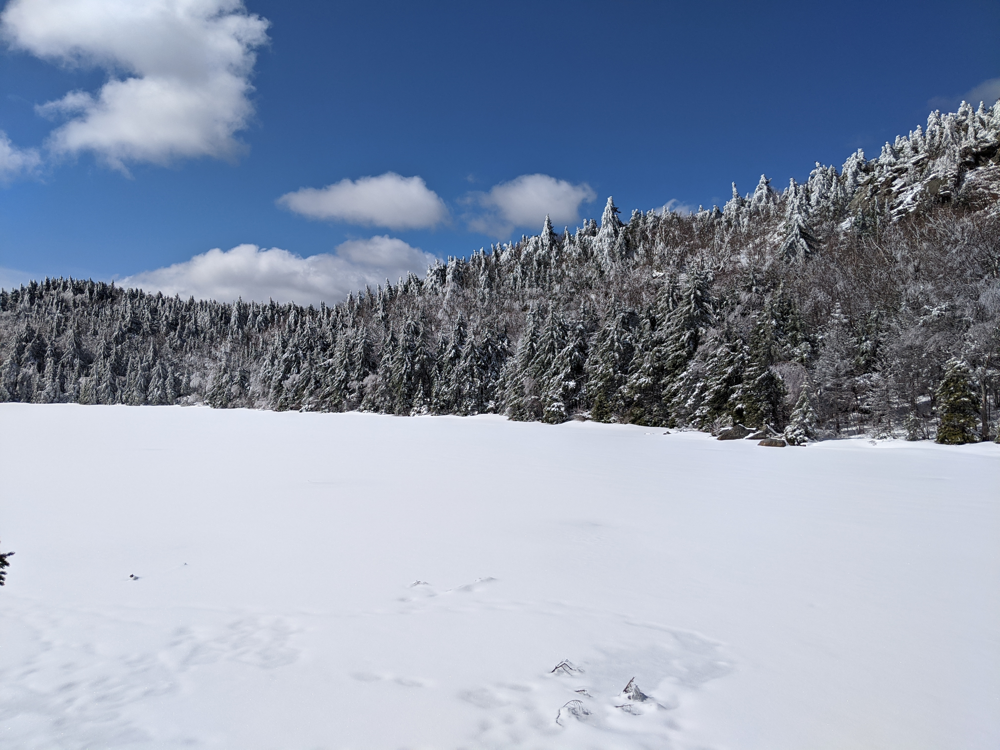
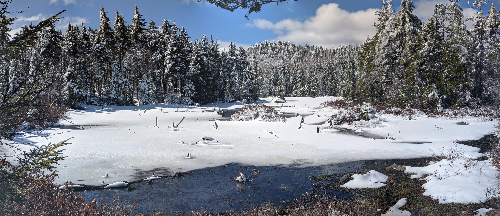

Distance
Distance Elevation
Elevation Observed Wildlife
Observed WildlifeThis early spring hike was right after a couple inches of fresh powder in the mountains. Less than two hours from Boston, this hike provided amazing scenery at Lake Solitude and from the view looking down upon it. Don't bother hiking to the ski summit since the views are no better. This was a terrific way to say goodbye to winter.





Click the picture below for a vr experience from the rock in the image